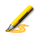
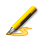
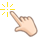
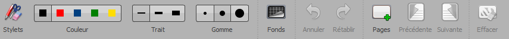
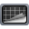

La palette della penna
La palette della penna ti offre accesso agli strumenti essenziali quando lavori su una lavagna.

Qui troverai la penna (), la gomma ( ) e il marcatore (). OpenBoard offre anche altre funzionalità che una lavagna classica non può fornire:
) e il marcatore (). OpenBoard offre anche altre funzionalità che una lavagna classica non può fornire:
 è il selettore. Con esso, puoi selezionare oggetti e interagire con essi.
è il selettore. Con esso, puoi selezionare oggetti e interagire con essi.-  è il dito magico. Puoi spostare gli oggetti o interagire con essi senza la necessità di selezionarli.
 è la mano. Puoi muoverti sulla pagina con essa. Molto utile quando combinata con le funzioni di zoom!
è la mano. Puoi muoverti sulla pagina con essa. Molto utile quando combinata con le funzioni di zoom! ti danno la possibilità di ingrandire e rimpicciolire. Scegli semplicemente quello che desideri e fai clic sulla pagina dove vuoi applicare lo zoom!
ti danno la possibilità di ingrandire e rimpicciolire. Scegli semplicemente quello che desideri e fai clic sulla pagina dove vuoi applicare lo zoom!- è un puntatore laser, utile per evidenziare elementi sulla lavagna senza interagire con essi.
- è utilizzato per disegnare linee rette facilmente.
- è uno strumento di testo, per scrivere un testo utilizzando la tastiera invece della penna.
 Puoi avere un controllo più preciso dello zoom con il mouse! Usa Ctrl/Cmd + la rotellina del mouse per ingrandire/ridurre con maggiore precisione!
Puoi avere un controllo più preciso dello zoom con il mouse! Usa Ctrl/Cmd + la rotellina del mouse per ingrandire/ridurre con maggiore precisione!
La barra degli strumenti della lavagna
La barra degli strumenti della lavagna ti offre la possibilità di cambiare colore e dimensione della penna o del marcatore, tra altre cose.

Troverai anche la possibilità di cambiare lo sfondo della lavagna, cliccando su 

Troverai anche pulsanti per annullare/ripristinare azioni, creare e navigare tra le pagine, cancellare l'intera lavagna, ...
Puoi cancellare parti più precise della lavagna facendo clic prolungato su  . Alcune funzioni nascoste anche su !
. Alcune funzioni nascoste anche su !